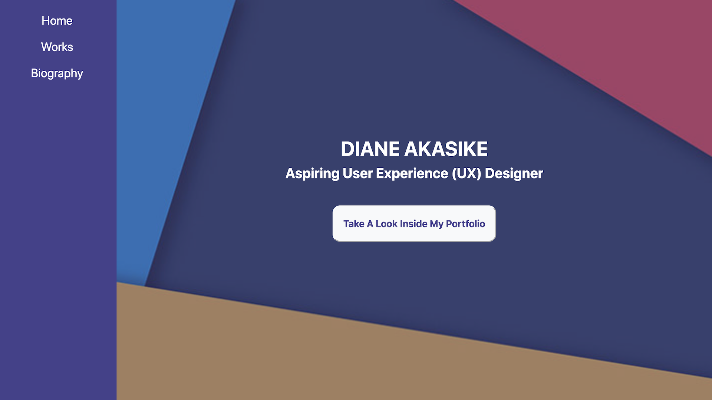

Previous Portfolio Website
My task was to build a Portfolio website that includes:
- A home page
- A works page (A photo gallery or things I have worked on so far in my academic program)
- A biography page (Answers questions like: Who am I? What am I studying at Rutgers? What are some things I would like to point out about myself?)
Home Page
Works Page
Biography Page
Footer
The steps I took included:
- Building a visual sketch of each page
- Converting the visual sketches to wireframes
- Building 3 high-fidelity HTML pages (Utilizing valid HTML5 and CSS3 tags and properties only)
In the end, I felt like I was able to achieve the design goals I set out for myself when I was creating the sketches and wireframes and that the choices I made were relevant to the type of website I was aiming to create. My rationale for all my final design choices was based on creating an aesthetic and minimalist design and focusing on the uniformity and continuity of my website. My goal was to make the site a representation of me and I wanted to present myself in a simple, yet sophisticated way. I thought the choices I made enabled me to produce an appealing web design and successful user experience at the time. Now that my skills have improved, I am able to build a portfolio website with a better design, that is now more user-friendly and visually appealing.